Batch processor
The script was written and tested in InDesign 2024 on Windows 10 and on Mac.
Click here to download the latest version 5.4 which besides JavaScript (jsx / js / jsxbin), also supports AppleScript (scpt), Visual Basic Script (vbs) and UXP Script (idjs).
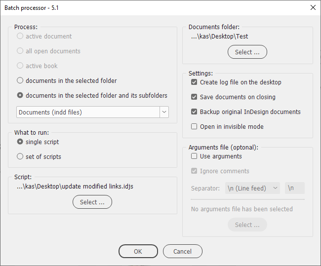
Originally this script was written to extend further the functionality of Rorohiko´s Action Recorder: you can record an action, export it to jsx-file and run it against a number of InDesign documents. Unfortunately, it hasn’t been developed any further beyond the beta version and became a dismissed case. At some point, I realized that this can be in some respect an analogous to Photoshop’s Batch and Action recorder features. But what we can do now is to use a similar approach. In fact, an action in Photoshop is a series of simple pre-recorded commands. With the batch processor, we can execute a sequence of simple scripts.
Now you must be asking me, “Well, how can I get these ‘simple’ scripts?” Here are some ideas:
- Look for the script you need on the adobe scripting forum. Most probably somebody has already written it and you can even choose among a few versions. If it’s not found, or what you found isn’t exactly what you want, you may post a request on the forum and there’s a good chance that someone would write (or adjust) the script for you because simple scripts are easy -- and naturally doesn’t take long to write.
- You can find a lot of scripts on the web. Here are some links.
- You can start learning scripting. Here are some resources for beginners.
- I’m planning to make a section on my site with scripts that can be used with batch processor. I’m going to provide detailed comments and explanation so even non-scripters could adjust them to their needs.
Here is the description of the way it works:
The settings you select in the dialog box will be saved after you click the OK button so don’t have to select them again next time you run the script.
The progress bar displays the name of the file being processed.
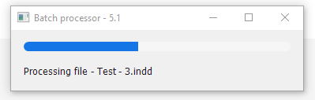
Process
You can run the script on one of the following:
- the active document
- all open documents
- the active book
- the documents in the selected folder
- the documents in the selected folder and its subfolders
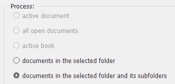
From the drop-down list, you can choose what kind of documents to process:
- Documents only (indd-files)
- Templates only (indt-files)
- Documents & Templates (indd & indt files)
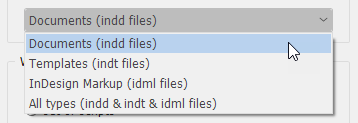
What to run
You can select and run either a single script.
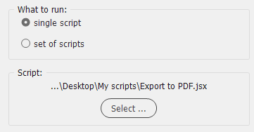
Or a set of scripts located in the same folder. In this case, I recommend you to add numbers at the beginning of their names to control the order of execution. Like so: 01_SomeName.jsx, 02_SomeName.jsx, 03_SomeName.jsx and so on
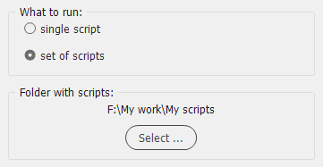
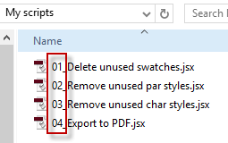
Starting from version 4, the batch processor can run not only scripts written in JavaScript, but also in AppleScript (Mac) and Visual Basic Script (Windows). This gives us huge opportunities: for example, even though JavaScript is the most popular scripting language used for automating InDesign, you may be more familiar with alternative ones.
Also, using these languages you can make InDesign interact with other scriptable apps — like Microsoft Excel, Word, Access, Outlook, etc. — for instance, export each document as a minimum-size-pdf file, attaching it to e-mail and sending via Mail or Outlook, or process all the documents in the selected folder and optionally it´s subfolders getting the information about the links — name, path, modification date, size, etc. — and putting them directly into Access database or Excel spreadsheet. Possibilities seem to be limited only by your imagination!
Starting from version 5, you can also run modern UXP Scripts (idjs files) and process InDesign Markup (idml) files.
Windows — vbs, jsx, js, jsxbin and idjs files are available
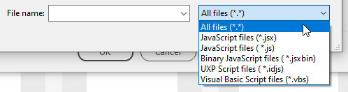
Macintosh — scpt, jsx, js, jsxbin and idjs files are available
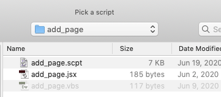
Documents folder
The Documents folder panel is activated only when you choose the documents in the selected folder (and its subfolders) option so that you can choose the folder to process.
Settings
If Create log file on the desktop checkbox is on, a text file will be created on the desktop listing every document processed and the scripts executed.
If errors occur during the execution of the batch processor, they appear at the end of the log. For example, on the screenshot below, you can see an error message for an invalid file which can’t be opened by InDesign.
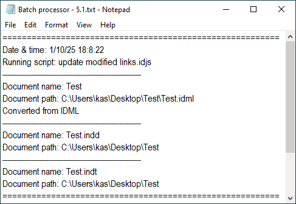
if Backup original InDesign documents checkbox is on, the original copy of each indd-file is kept: its name begins with "Backup_".
Note that backups are never overwritten: an incremental number is added after the "Backup" prefix. Also, the files whose names begin with "Backup" are skipped.
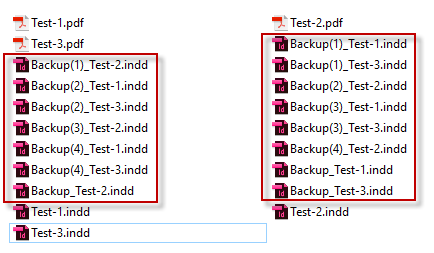
Backups created by the script loose their creation & modification dates due to JavaScript limitations.
If Save documents on closing is on, the documents will be saved before closing.
Important note: the documents that have already been opened before running the script will be saved and remain open. (This feature works in all versions starting from CS5: in earlier versions, all documents will be closed.)
With Open in invisible mode checkbox on, open documents are not displayed on the screen which may decrease execution time.
Arguments file (optonal)
Arguments file is a handy way to send some parameters (arguments) to the script.
Use arguments — tells the batch processor to use an argument file which is a plain text file created or edited in an application like Notepad, TextEdit. (Don’t use Word). When this checkbox is on, you obviously should select a file: either txt or csv.
The file contains a list (array) of parameters which can be delimited by return, line feed, comma, semicolon, pile, etc. Each element is a plain string, but it can be easily converted by a script to the necessary data type.
To put it simply, the argument file is a sort of preset file. For example, you may use one to create pdf-files for a printing office and another for ‘minimum size’ pdf-files to be sent by e-mail.
When the Ignore comments checkbox is on, the script ignores comments in the arguments file which are regular comments used in ESTK:
// your comment /* your comment */
With a lot of parameters, it is useful to comment each of them to avoid confusion.
Separator — here you can choose one of the following pre-built characters to separate (delimit) arguments:
- \\n (Line feed)
- , (Comma)
- ; (Semicolon)
- | (Pile)
Also, you can type in whatever you want as a separator: custom.
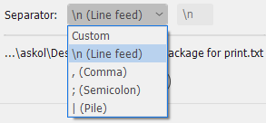
Arguments are passed via global g.arguments variable. For example, you can read the first argument like so:
var myFirstParameter = g.arguments[0];
Here is a more detailed information and are examples of using this feature.
Important notes:
- Don’t use \\r as a separator — use \\n instead
- In InDesign CS3 and below the arguments feature is unavailable
Don’t use a global variable called 'g' in your scripts (written in JavaScript only) to be run from the batch processor because it’s used for data exchange between the primary and secondary scripts.
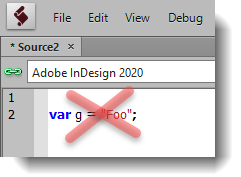
Use g.doc variable to send the current document from the batch processor to a secondary script. You should use it with the all open documents option selected, otherwise, it will not work correctly. With all other options, you can alternatively use app.activeDocument or app.documents[0].
You can get feedback from your script using global g.WriteToFile() function. It has only one argument: the string that will be written onto the log file on the desktop. Here is an example of how to use it.
When the files are batch processed, all warnings (e.g. missing fonts, links, etc.) are turned off.
At the end the final report pops-up telling you the total number of documents processed, the time it took and, if errors occur, their number.
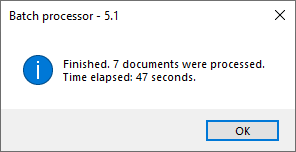
Developing scripts for the batch processor, I concluded it would be much better to make ‘universal’ scripts that work both:
- as regular standalone scripts that are run against the active document in InDesign or ESTK (it’s much easier for debugging)
- and as the scripts used with the batch processor
For this purpose, I developed a template that can be used as a starting point for a new script. Click here for more details and the download link.
Yet another important note: for very old versions only (e.g. CS3):
With InDesign version CS3 I had a problem: sometimes a script triggered ESTK and started loading data (object model for CS3) which would take till the end of the universe to complete.
To solve such a problem:
- Start ESTK
- Select InDesign as the target in the top left corner
Click here to download the latest version of the script.
From time to time, I find bugs and fix them. There’s a small possibility that fixing a bug would break something else. For example, in corona times, I can’t get to my office to test it on Mac. If this happens, you can download previous versions from here.
And finally one more note: why with some older InDesign versions AppleScript doesn’t work anymore when run from the batch processor? (In latest versions it works as expected).
See also Peter Kahrel's Batch-process (convert/export/import) documents script.
If you found this script useful and want me to develop it further, consider supporting me by donating via PayPal directly to my e-mail: askoldich [at] yahoo [dot] com. (Due to PayPal’s restrictions for Ukraine, I can’t have a Donate button on my site.)
Summary of the related pages:
- Scripts for the batch processor
- Template
- Arguments file
- Logging example
- Example of achieving the same task using different scripting languages
- A simple example of adding data from InDesign to Excel on Mac
- List links from InDesign to Excel
- Why AppleScript doesn’t work anymore when run from the batch processor?